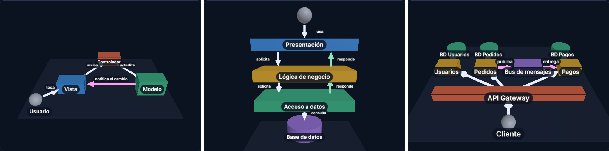
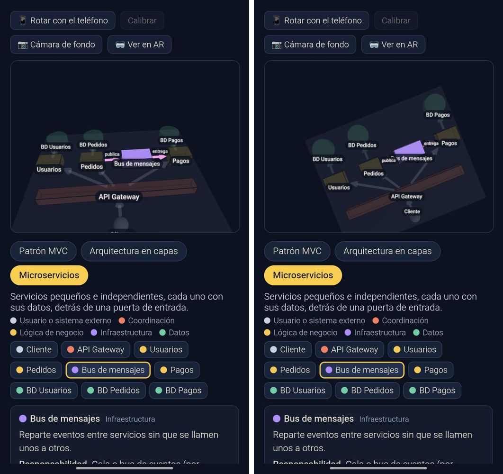
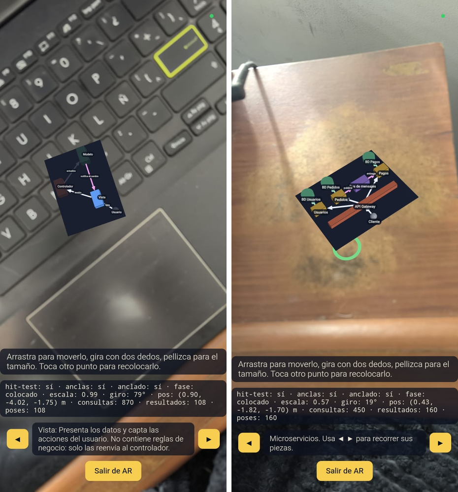

Desde la Sesión 35 el Atlas dibuja un cubo: sirvió para aprender sensores, cámara, WebXR, hit-test y anclas sin distraerse con el contenido. Hoy el contenido llega. Tenemos que decidir cómo se guarda un modelo de arquitectura, y la decisión condiciona todo lo demás.
Objetivos de aprendizaje
- ✓Describir un modelo de arquitectura como datos (piezas y enlaces) y explicar por qué agregar un patrón nuevo es escribir una tabla, no geometría.
- ✓Construir con Three.js un generador que convierta esos datos en mallas, flechas y rótulos, y normalizarlo a un tamaño y un apoyo fijos para que la lógica de AR no cambie.
- ✓Elegir una pieza tocándola (
Raycaster), distinguiendo un toque de un arrastre, y resaltarla atenuando el resto. - ✓Servir la explicación de cada pieza desde una ficha JSON que viaja por tres caminos: caché, red o, si no hay ninguno, el texto que ya está en el código.
- ✓Migrar una base IndexedDB que cambia de clave (de
modelo-demo-1amvc) sin perder favoritos ni notas. - ✓Diseñar la interacción en AR cuando «tocar» ya significa «colocar»: botones ◀ ▶ en el overlay, protegidos con
beforexrselect.
Recursos de esta sesión
- Descargar .zipCheckpoint — cierre de la Sesión 39. El Atlas 3D con la realidad aumentada completa (retícula, anclas y gestos) y el cubo de prueba. Es el punto de partida de hoy.
- Descargar .zipVersión terminada de esta sesión. Agrega la carpeta
src/modelos/(tipos, constructor y los tres modelos), las fichaspublic/modelos/*.jsony los cambios envisor.ts,main.ts,db.tsydescargas.ts.
1Del cubo de prueba a un catálogo de modelos
| Opción | Cómo es | Lo bueno | Lo malo para este curso |
|---|---|---|---|
Archivos .glb | Un modelo 3D exportado desde Blender u otra herramienta | Cualquier forma, texturas, animaciones | Hay que modelar, exportar y cargar cada uno; son binarios que no se leen ni se corrigen con un editor de texto; y pesan. |
| Una función por modelo | crearMVC(), crearCapas()… con new Mesh(…) a mano | Control total | Mucho código repetido: cada modelo reescribe flechas, rótulos y colores. |
| Datos + un constructor genérico | Cada modelo es una lista de piezas y de enlaces; un constructor los convierte en objetos 3D | Un patrón nuevo son 20 líneas de datos; se leen, se revisan y se prueban como texto | Solo cajas, cilindros y esferas: es un esquema didáctico, no una réplica realista. |
Elegimos la tercera. Es la misma idea que en el curso aparece una y otra vez: separar lo que cambia (los datos) de lo que no (el motor). Y encaja con un diagrama de arquitectura, que ya es una lista de cajas y de flechas. Tres tipos de TypeScript la describen:
src/modelos/tipos.ts (una pieza)
export interface Pieza {
id: string;
nombre: string;
rol: Rol;
forma: Forma;
/** Centro de la pieza (x derecha, y arriba, z hacia el espectador). */
pos: [number, number, number];
/** Ancho, alto y fondo. */
tam: [number, number, number];
/** Frase corta: viaja con el código, así se lee aunque no haya conexión. */
resumen: string;
/** Dónde va el rótulo: «arriba» de la pieza (por defecto), «abajo», o «frente», sobre su cara delantera. */
rotulo?: "arriba" | "abajo" | "frente";
}src/modelos/tipos.ts (un enlace)
/** Cómo se comunican dos piezas: una llamada directa, un evento, o un flujo de datos. */
export type TipoEnlace = "llamada" | "evento" | "datos";
export interface Enlace {
de: string;
a: string;
etiqueta?: string;
tipo: TipoEnlace;
/** Desplaza la flecha entera, para dibujar dos flechas paralelas entre las mismas piezas. */
desvio?: [number, number, number];
}src/modelos/tipos.ts (un modelo y su ficha)
export interface DefinicionModelo {
id: string;
nombre: string;
/** Una línea para la lista de modelos. */
resumen: string;
piezas: Pieza[];
enlaces: Enlace[];
/** Altura de la cámara de la vista normal, en grados sobre el horizonte (cada modelo se lee mejor desde un ángulo distinto). */
elevacion?: number;
/** Factor de la distancia de la cámara (menor = más cerca). Por defecto 1. */
distancia?: number;
}Tres decisiones de diseño que conviene notar:
- El rol decide el color. Una pieza no dice «soy azul»; dice «soy de presentación», y una tabla (
ROLES) asigna el color y el texto de la leyenda. Así el mismo azul significa lo mismo en los tres modelos: quien aprende MVC reconoce la «vista» en capas y en microservicios. - Hay dos textos por pieza, a propósito. El
resumen(una frase) viaja dentro del código: se lee siempre, incluso sin conexión y sin haber descargado nada. La explicación larga (Ficha) vive en un JSON aparte que se descarga: es el contenido que la Sesión 37 ya sabía bajar en segundo plano. - El tipo de enlace (
llamada,evento,datos) se dibuja con un color distinto. «La vista llama al controlador» y «el modelo notifica a la vista» son flechas de naturaleza distinta, y el dibujo debe poder mostrarlo.
2Los tres modelos, escritos como datos
Con los tipos listos, un modelo completo cabe en una pantalla. Este es MVC entero: cuatro piezas (el usuario y las tres del patrón) y cuatro enlaces.
src/modelos/mvc.ts
export const MVC: DefinicionModelo = {
id: "mvc",
nombre: "Patrón MVC",
resumen: "Tres responsabilidades separadas: datos y reglas, pantalla, y quien las coordina.",
elevacion: 34,
piezas: [
{ id: "usuario", nombre: "Usuario", rol: "actor", forma: "esfera", pos: [-6.6, 0, 4], tam: [1.1, 1.1, 1.1], rotulo: "abajo", resumen: "Quien toca la pantalla y mira el resultado." },
{ id: "vista", nombre: "Vista", rol: "presentacion", forma: "caja", pos: [-3.8, 0, 1.8], tam: [2.6, 1.2, 1.5], rotulo: "frente", resumen: "Dibuja los datos y capta lo que hace el usuario. No toma decisiones." },
{ id: "controlador", nombre: "Controlador", rol: "coordinacion", forma: "caja", pos: [0, 0, -3.4], tam: [2.8, 1.2, 1.5], rotulo: "frente", resumen: "Recibe las acciones de la vista y decide qué debe hacer el modelo." },
{ id: "modelo", nombre: "Modelo", rol: "datos", forma: "caja", pos: [3.8, 0, 1.8], tam: [2.6, 1.6, 1.5], rotulo: "frente", resumen: "Guarda los datos y aplica las reglas del negocio. No sabe cómo se ven." },
],
enlaces: [
{ de: "usuario", a: "vista", etiqueta: "toca", tipo: "llamada" },
{ de: "vista", a: "controlador", etiqueta: "acción", tipo: "llamada" },
{ de: "controlador", a: "modelo", etiqueta: "actualiza", tipo: "llamada" },
{ de: "modelo", a: "vista", etiqueta: "notifica el cambio", tipo: "evento" },
],
};Las coordenadas son las de un plano cualquiera, en «unidades del modelo»: x a la derecha, y arriba, z hacia quien mira. No importa la escala absoluta, porque el constructor la normaliza (sección 5). Lo que sí importa es la disposición: el controlador al fondo y la vista y el modelo en primer plano forman el triángulo clásico de MVC, y se lee de un vistazo.
Capas se dispone en vertical: tres losas apiladas y la base de datos debajo. Fíjate en los dos enlaces entre cada par de capas: solicita baja y responde sube. Son dos flechas entre las mismas piezas, así que cada una lleva un desvio (a la izquierda y a la derecha) para que no se encimen:
src/modelos/capas.ts
export const CAPAS: DefinicionModelo = {
id: "capas",
nombre: "Arquitectura en capas",
resumen: "Niveles apilados: cada capa solo habla con la inmediatamente inferior.",
elevacion: 10,
piezas: [
{ id: "usuario", nombre: "Usuario", rol: "actor", forma: "esfera", pos: [0, 6.3, 0], tam: [1.1, 1.1, 1.1], resumen: "Quien usa la aplicación." },
{ id: "presentacion", nombre: "Presentación", rol: "presentacion", forma: "caja", pos: [0, 4.2, 0], tam: [7, 0.8, 3.2], rotulo: "frente", resumen: "Pantallas y formularios. Muestra datos y recoge acciones." },
{ id: "negocio", nombre: "Lógica de negocio", rol: "logica", forma: "caja", pos: [0, 2.1, 0], tam: [7, 0.8, 3.2], rotulo: "frente", resumen: "Las reglas: validar, calcular, decidir. Aquí vive lo que hace valiosa a la aplicación." },
{ id: "acceso", nombre: "Acceso a datos", rol: "datos", forma: "caja", pos: [0, 0, 0], tam: [7, 0.8, 3.2], rotulo: "frente", resumen: "Traduce la lógica en consultas: lee y escribe sin que las capas de arriba conozcan el almacenamiento." },
{ id: "bd", nombre: "Base de datos", rol: "infra", forma: "cilindro", pos: [0, -2.4, 0], tam: [2.8, 1, 2.8], rotulo: "frente", resumen: "Donde los datos viven de forma permanente." },
],
enlaces: [
{ de: "usuario", a: "presentacion", etiqueta: "usa", tipo: "llamada" },
{ de: "presentacion", a: "negocio", etiqueta: "solicita", tipo: "llamada", desvio: [-2, 0, 0] },
{ de: "negocio", a: "presentacion", etiqueta: "responde", tipo: "datos", desvio: [2, 0, 0] },
{ de: "negocio", a: "acceso", etiqueta: "solicita", tipo: "llamada", desvio: [-2, 0, 0] },
{ de: "acceso", a: "negocio", etiqueta: "responde", tipo: "datos", desvio: [2, 0, 0] },
{ de: "acceso", a: "bd", etiqueta: "consulta", tipo: "llamada" },
],
};Microservicios es el más grande: nueve piezas. Un cliente, un API Gateway ancho como una barra, tres servicios y un bus de mensajes en una fila, y una base de datos propia detrás de cada servicio (cilindros). La «base de datos por servicio» es justo la idea que el dibujo debe transmitir: no hay un cilindro compartido. Además hay dos enlaces de tipo evento (rosa): Pedidos publica en el bus y el bus entrega a Pagos, sin que Pedidos conozca a Pagos.
| Modelo | Piezas | Enlaces | Qué debe entenderse al verlo |
|---|---|---|---|
| MVC | 4 | 4 (3 llamadas, 1 evento) | La vista no decide; el controlador orquesta; el modelo avisa de sus cambios sin saber quién escucha. |
| Capas | 5 | 6 (4 llamadas, 2 de datos) | Cada capa solo habla con la de abajo; la petición baja y la respuesta sube. |
| Microservicios | 9 | 9 (7 llamadas, 2 eventos) | Una puerta de entrada, servicios independientes con su propia base y un bus que los desacopla. |
Un archivo de índice junta los tres en un catálogo, y toda la aplicación —pestañas, tarjetas, descargas— se construye recorriéndolo. Agregar un cuarto modelo será agregar un archivo y una línea aquí:
src/modelos/index.ts
export const CATALOGO: DefinicionModelo[] = [MVC, CAPAS, MICROSERVICIOS];
export function modeloPorId(id: string): DefinicionModelo | undefined {
return CATALOGO.find((m) => m.id === id);
}3El constructor: de datos a mallas
construirModelo(def) es el único sitio que sabe de Three.js. Recibe una definición y devuelve un objeto con lo que el visor necesita: la raíz que se cuelga de la escena, un mapa id → malla de lo que se puede tocar, y dos funciones (resaltar y destruir).
src/modelos/constructor.ts (lo que devuelve)
export interface ModeloConstruido {
/** Raíz ya normalizada: se cuelga de `grupo` en el visor. */
raiz: THREE.Group;
/** Altura del centro del modelo ya normalizado (su base está en -0,8). */
centroY: number;
/** Mallas de las piezas por id (con `userData.piezaId`): lo que se puede tocar. */
piezas: Map<string, THREE.Mesh>;
/** Resalta una pieza y atenúa el resto; null quita el resalte. */
resaltar(id: string | null): void;
destruir(): void;
}La primera mitad convierte cada pieza en una malla. La forma decide la geometría; el rol, el color; y a las cajas se les dibujan las aristas para que se distingan los volúmenes. Cada malla guarda su id en userData.piezaId: es el hilo que, más adelante, une «lo que el dedo tocó» con «la pieza del modelo».
src/modelos/constructor.ts (una malla por pieza)
for (const p of def.piezas) {
const [w, h, d] = p.tam;
const geometria =
p.forma === "esfera" ? new THREE.SphereGeometry(w / 2, 32, 20) : p.forma === "cilindro" ? new THREE.CylinderGeometry(w / 2, w / 2, h, 36) : new THREE.BoxGeometry(w, h, d);
const color = ROLES[p.rol].color;
const material = new THREE.MeshStandardMaterial({ color, roughness: 0.5, metalness: 0.05, transparent: true, emissive: color, emissiveIntensity: 0 });
const malla = new THREE.Mesh(geometria, material);
malla.position.set(...p.pos);
malla.userData.piezaId = p.id;
if (p.forma === "caja") {
const aristas = new THREE.LineSegments(new THREE.EdgesGeometry(geometria), new THREE.LineBasicMaterial({ color: 0x0b1220 }));
malla.add(aristas);
}
solido.add(malla);
piezas.set(p.id, malla);
const rotulo = crearRotulo(p.nombre, 0.4 * k);
if (p.rotulo === "frente") rotulo.position.set(p.pos[0], p.pos[1], p.pos[2] + d / 2 + 0.05);
else if (p.rotulo === "abajo") rotulo.position.set(p.pos[0], p.pos[1] - h / 2 - 0.45 * k, p.pos[2]);
else rotulo.position.set(p.pos[0], p.pos[1] + h / 2 + 0.45 * k, p.pos[2]);
decorado.add(rotulo);
}Tres cosas de esta función que parecen detalles y no lo son:
transparent: truedesde el principio. El resaltado atenúa las piezas no elegidas bajando su opacidad. Cambiar un material de opaco a transparente en caliente obliga a recompilarlo; dejarlo transparente de entrada evita un parpadeo.- Dos grupos,
solidoydecorado. Los rótulos y las flechas no deben contar al medir el tamaño del modelo (un rótulo ancho lo «ensancharía»). Se mide solosolido. - La base. Una placa oscura bajo todo el modelo. Sin ella el esquema flota; con ella «apoya» en algo, y en AR eso es literal: la placa es lo que descansa sobre la mesa.
4Flechas y rótulos que se leen
Una flecha es un cilindro (el cuerpo) y un cono (la punta). Lo que da trabajo es dónde empieza y dónde acaba: si la flecha va de centro a centro, atraviesa las cajas y se pierde. Debe salir del borde de una pieza y llegar al borde de otra. puntoDeBorde calcula ese punto según la forma:
src/modelos/constructor.ts (el punto de borde)
function puntoDeBorde(p: Pieza, centro: THREE.Vector3, dir: THREE.Vector3): THREE.Vector3 {
const [w, h, d] = p.tam;
let t: number;
if (p.forma === "esfera") {
t = w / 2;
} else if (p.forma === "cilindro") {
const radial = Math.hypot(dir.x, dir.z);
const tRadial = radial > 1e-6 ? w / 2 / radial : Infinity;
const tAxial = Math.abs(dir.y) > 1e-6 ? h / 2 / Math.abs(dir.y) : Infinity;
t = Math.min(tRadial, tAxial);
} else {
const k = Math.max(Math.abs(dir.x) / w, Math.abs(dir.y) / h, Math.abs(dir.z) / d);
t = 0.5 / k;
}
return centro.clone().addScaledVector(dir, t);
}La idea: desde el centro, caminar en la dirección de la flecha una distancia t hasta tocar el borde. Para una esfera, t es el radio. Para una caja, el eje que «llega primero» es el que tiene el mayor cociente entre la componente de la dirección y la medida de la caja, y t = 0,5 / k. Para un cilindro hay dos candidatos —la pared lateral y las tapas— y vale el menor.
Los rótulos son Sprites (planos que siempre miran a la cámara) con una textura dibujada en un <canvas> 2D. Así el texto se dibuja con la fuente del sistema, con acentos y sin cargar ninguna imagen:
src/modelos/constructor.ts (un rótulo con canvas)
function crearRotulo(texto: string, altura: number, pequeno = false): THREE.Sprite {
const px = pequeno ? 40 : 56;
const lienzo = document.createElement("canvas");
const ctx = lienzo.getContext("2d")!;
const fuente = `600 ${px}px system-ui, -apple-system, "Segoe UI", sans-serif`;
ctx.font = fuente;
const ancho = Math.ceil(ctx.measureText(texto).width) + px;
lienzo.width = ancho;
lienzo.height = Math.round(px * 1.7);
ctx.font = fuente; // cambiar el tamaño del canvas borra el contexto
ctx.fillStyle = "rgba(11, 18, 32, 0.82)";
const r = lienzo.height / 2;
ctx.beginPath();
ctx.roundRect(0, 0, lienzo.width, lienzo.height, r);
ctx.fill();
ctx.fillStyle = "#ffffff";
ctx.textBaseline = "middle";
ctx.textAlign = "center";
ctx.fillText(texto, lienzo.width / 2, lienzo.height / 2 + 2);
const textura = new THREE.CanvasTexture(lienzo);
textura.colorSpace = THREE.SRGBColorSpace;
const sprite = new THREE.Sprite(new THREE.SpriteMaterial({ map: textura, transparent: true, depthTest: false }));
sprite.renderOrder = 10; // siempre encima: el texto debe poder leerse
sprite.scale.set((lienzo.width / lienzo.height) * altura, altura, 1);
return sprite;
}depthTest: false y renderOrder = 10 hacen que el rótulo se pinte por encima de todo, aunque haya una caja delante. Es la diferencia entre un diagrama que se lee y uno donde el «Gateway» queda tapado por el «Cliente».
Lo que aprendió el primer dibujo. La primera versión tenía rótulos de un tamaño fijo y los tres modelos se leían mal: en Microservicios (14 unidades de ancho) los textos se encimaban, y en MVC (≈10) eran enormes. Tres correcciones, todas en datos o en una línea del constructor: (1) el tamaño de rótulos y flechas se multiplica por
k = lado / 6, donde lado es la medida mayor del modelo, así un modelo grande no se llena de texto diminuto ni uno chico de texto gigante; (2) el campo rotulo de la pieza ("arriba", "abajo", "frente") permite poner el nombre sobre la cara delantera de una caja plana, donde no estorba; (3) cada modelo trae su propia elevacion de cámara (MVC 34°, Capas 10°, Microservicios 40°) y, si hace falta, una distancia: unas losas apiladas se leen de frente, pero una fila de servicios se lee mejor desde arriba. Ninguna exigió tocar el constructor más allá de k.Quitar la etiqueta «petición» del enlace Cliente → Gateway fue otra de esas correcciones: su rótulo caía justo sobre el nombre del Gateway. Cuando dos textos compiten, a veces la respuesta es que uno sobra: el significado de esa flecha ya lo cuenta la ficha del Cliente.
5Normalizar: un modelo que cabe en 1,6 con la base en −0,8
Los tres modelos miden cosas distintas (6, 10 y 14 unidades). Pero la lógica de AR de las sesiones 38 y 39 se escribió para un cubo de 1,6 con el centro en el origen: su base está en y = −0,8, y todo el código de colocación («sube medio cubo para apoyarlo en la superficie») depende de ese número. Hay dos caminos: reescribir la lógica de AR para cada modelo, o hacer que todo modelo se parezca al cubo en las dos cosas que AR mira. Elegimos el segundo, y es la razón de esta parte del constructor:
src/modelos/constructor.ts (normalizar)
// Normalizar: caber en TAM_NORMALIZADO, centrado en x/z y con la base en y = -TAM/2.
const medida = new THREE.Box3().setFromObject(solido);
const tamano = medida.getSize(new THREE.Vector3());
const centro = medida.getCenter(new THREE.Vector3());
const escala = TAM_NORMALIZADO / Math.max(tamano.x, tamano.y, tamano.z);
interior.scale.setScalar(escala);
interior.position.set(-centro.x * escala, -TAM_NORMALIZADO / 2 - medida.min.y * escala, -centro.z * escala);
const raiz = new THREE.Group();
raiz.add(interior);Tres líneas hacen el trabajo: se mide la caja que contiene el modelo, se calcula una escala para que su lado mayor valga 1,6, y se coloca el interior de modo que quede centrado en x y z y con la base en −0,8. Desde fuera, un modelo normalizado es indistinguible del cubo antiguo: el hit-test, el ancla, los gestos y la escala inicial de 0,25 (40 cm) siguen valiendo sin cambiar una línea.
Fuera de AR hace falta lo contrario: que el modelo gire alrededor de su centro, no de su base. Por eso el constructor también devuelve centroY, la altura del centro ya normalizado, y el visor desplaza el modelo −centroY en la vista normal y lo devuelve a 0 al entrar en AR (y viceversa al salir). Antes se medía ese centro con una Box3 sobre el objeto, y salía descentrado: el objeto ya estaba escalado y Box3 mide en coordenadas del mundo. Calcularlo una sola vez, donde se conocen las medidas, evita el error.
src/visor.ts (mostrar un modelo)
function mostrarModelo(def: DefinicionModelo) {
if (modelo) {
grupo.remove(modelo.raiz);
modelo.destruir();
}
modelo = construirModelo(def);
grupo.add(modelo.raiz);
centroY = modelo.centroY;
piezaElegida = null;
if (!sesionAR) {
modelo.raiz.position.y = -centroY; // en la vista normal el modelo gira alrededor de su centro; en AR, apoyado por la base
grupo.rotation.set(0, 0, 0);
const elev = ((def.elevacion ?? 30) * Math.PI) / 180;
const dist = DISTANCIA_VISTA * (def.distancia ?? 1);
camara.position.set(0, dist * Math.sin(elev), dist * Math.cos(elev));
controles.target.set(0, 0, 0);
controles.update();
}
}6Verlo en la página y tocar una pieza

Los tres modelos en el visor de escritorio. Los colores son los roles: azul presentación, naranja coordinación, amarillo lógica, verde datos, morado infraestructura; las flechas rosadas son eventos.
Elegir una pieza con el dedo es un problema de geometría resuelto por Three.js: un Raycaster lanza un rayo desde la cámara a través del punto tocado y devuelve los objetos que corta, del más cercano al más lejano. Solo hay que convertir la posición del dedo (píxeles) a coordenadas normalizadas de pantalla (de −1 a 1, con la y invertida) y pasarle la lista de mallas tocables:
src/visor.ts (tocar una pieza)
// ── Sesión 40: elegir una pieza tocándola (solo fuera de AR) ──
const rayoToque = new THREE.Raycaster();
let avisarToque: ((id: string | null) => void) | null = null;
let inicioToque: { x: number; y: number; t: number } | null = null;
const lienzo = renderer.domElement;
const alPulsar = (ev: PointerEvent) => {
inicioToque = { x: ev.clientX, y: ev.clientY, t: performance.now() };
};
const alSoltar = (ev: PointerEvent) => {
const ini = inicioToque;
inicioToque = null;
// Un arrastre (girar la vista) no es un toque: se mide cuánto se movió el dedo.
if (!ini || sesionAR || !modelo) return;
if (Math.hypot(ev.clientX - ini.x, ev.clientY - ini.y) > 8 || performance.now() - ini.t > 600) return;
const caja = lienzo.getBoundingClientRect();
rayoToque.setFromCamera(new THREE.Vector2(((ev.clientX - caja.left) / caja.width) * 2 - 1, -((ev.clientY - caja.top) / caja.height) * 2 + 1), camara);
const impactos = rayoToque.intersectObjects([...modelo.piezas.values()], false);
const id = (impactos[0]?.object.userData.piezaId as string | undefined) ?? null;
seleccionar(id === piezaElegida ? null : id); // volver a tocar la misma pieza la suelta
avisarToque?.(piezaElegida);
};
lienzo.addEventListener("pointerdown", alPulsar);
lienzo.addEventListener("pointerup", alSoltar);El mismo canvas ya sirve para girar la vista arrastrando (los controles de órbita), así que un dedo apoyado puede querer dos cosas. La regla que separa un toque de un arrastre mide cuánto se movió el dedo y cuánto tardó: menos de 8 px y menos de 600 ms es un toque; si no, es un gesto de giro o una pulsación larga y no se selecciona nada. Tocar la misma pieza dos veces la suelta; tocar el vacío también.
Y la guarda sesionAR al principio: en AR no se eligen piezas con el dedo, por una razón que se ve en la sección 9.
El resaltado vive en el constructor, porque es el que conoce las mallas y las flechas. La pieza elegida brilla (emissive), las demás bajan a 28 % de opacidad, y de las flechas solo se mantienen visibles las que entran o salen de la pieza: la pregunta «¿con quién habla el Controlador?» queda respondida en el dibujo.
src/modelos/constructor.ts (resaltar)
function resaltar(id: string | null) {
for (const [pid, malla] of piezas) {
const m = malla.material as THREE.MeshStandardMaterial;
const activa = id === null || pid === id;
m.opacity = activa ? 1 : 0.28;
m.depthWrite = activa;
m.emissiveIntensity = id !== null && pid === id ? 0.55 : 0;
}
for (const f of flechas) {
const toca = id === null || f.enlace.de === id || f.enlace.a === id;
for (const m of f.materiales) m.opacity = toca ? 1 : 0.15;
}
}7El panel: leyenda, lista de piezas y ficha
Tocar una pieza en un canvas no es la única forma de elegirla, y no debería serlo: es difícil acertar a una pieza pequeña con un dedo, un lector de pantalla no ve el canvas y un ratón fino no es lo mismo que un pulgar. Por eso, bajo el visor, hay una lista de piezas (chips) que hace exactamente lo mismo que tocar, más una leyenda de colores con los roles que aparecen en ese modelo. Todo se genera desde los datos:
src/main.ts (elegir un modelo)
function elegirModelo(id: string): void {
const def = modeloPorId(id);
if (!def) return;
modeloActualId = id;
piezaActual = null;
fichaActual = null;
visor.mostrarModelo(def);
tabsModelo.innerHTML = CATALOGO.map((m) => `<button type="button" class="tab" data-id="${m.id}" aria-pressed="${m.id === id}">${m.nombre}</button>`).join("");
tabsModelo.querySelectorAll<HTMLButtonElement>(".tab").forEach((b) => b.addEventListener("click", () => elegirModelo(b.dataset.id!)));
resumenModelo.textContent = def.resumen;
const roles = [...new Set(def.piezas.map((p) => p.rol))];
leyendaEl.innerHTML = roles.map((r) => `<span class="leyenda-item"><i style="background:${ROLES[r].css}"></i>${ROLES[r].nombre}</span>`).join("");
chipsPiezas.innerHTML = def.piezas.map((p) => `<button type="button" class="chip" data-id="${p.id}" aria-pressed="false"><i style="background:${ROLES[p.rol].css}"></i>${p.nombre}</button>`).join("");
chipsPiezas.querySelectorAll<HTMLButtonElement>(".chip").forEach((b) =>
b.addEventListener("click", () => {
const nueva = piezaActual === b.dataset.id ? null : b.dataset.id!;
visor.seleccionar(nueva);
sincronizarPieza(nueva);
})
);
pintarDetalle();
pintarPiezaAR();
// La ficha ampliada llega de la caché (sin conexión) o de la red; si no hay ninguna, se usa solo el código.
void leerFicha(id).then((f) => {
if (modeloActualId !== id) return;
fichaActual = f;
pintarDetalle();
pintarPiezaAR();
});
}Un detalle importante: el toque sobre el canvas y el clic en un chip llegan por caminos distintos pero terminan en la misma función, sincronizarPieza, que actualiza los chips, el detalle y el texto del overlay. Con una sola vía de actualización es imposible que el canvas muestre una pieza y la lista otra.
El panel de detalle muestra el resumen que ya está en el código y, si hay ficha, la responsabilidad ampliada y con quién habla la pieza. La ficha se pide con leerFicha, que prueba tres caminos en orden:
src/descargas.ts (leer una ficha)
export async function leerFicha(id: string): Promise<Ficha | null> {
try {
const cache = await caches.open(CACHE_MODELOS);
const guardada = await cache.match(urlDeModelo(id));
if (guardada) return (await guardada.json()) as Ficha;
} catch {
/* sin Cache Storage: se intenta la red */
}
try {
const resp = await fetch(urlDeModelo(id));
if (resp.ok) return (await resp.json()) as Ficha;
} catch {
/* sin red */
}
return null;
}| Situación | De dónde sale la ficha | Qué ve el usuario |
|---|---|---|
| Descargó las fichas (Sesión 37) | Caché modelos-3d | Explicación completa, con o sin conexión. |
| No descargó, pero hay red | Se pide a la red en el momento | Explicación completa. |
| No descargó y no hay red | Ninguna | El resumen de cada pieza (del código) y un aviso: «Detalle ampliado no disponible: descarga las fichas». |
El tercer caso es el que define el diseño: la app nunca se queda en blanco. Siempre hay algo útil que leer, y lo que falta se dice con claridad en lugar de fallar en silencio. El Service Worker, por su parte, no cambió: sigue sirviendo /modelos/*.json desde la caché si están y pidiéndolos a la red si no.
8Migrar la base: de modelo-demo-1 a mvc
Hay un problema que no se ve en el código nuevo y que solo sufren los usuarios que ya tenían la app: sus datos (favoritos, notas, estado de las descargas) están guardados bajo las claves modelo-demo-1, -2 y -3. Los modelos se llaman ahora mvc, capas y microservicios. Si no hacemos nada, el favorito marcado ayer «desaparece» —sigue en la base, bajo una clave que nadie lee— y las notas cifradas quedan huérfanas.
En IndexedDB la clave de un registro no se puede cambiar: hay que leer el registro, escribirlo con la clave nueva y borrar el viejo. Y esto debe ocurrir en el único momento en que se puede tocar la estructura, el evento upgradeneeded, dentro de la transacción de migración. Es la tercera versión de la base, y las migraciones ya iban «por tramos»:
src/db.ts (las correspondencias)
/** Sesión 40: correspondencia entre los identificadores viejos y los nuevos. */
export const RENOMBRES_V3: Record<string, string> = {
"modelo-demo-1": "mvc",
"modelo-demo-2": "capas",
"modelo-demo-3": "microservicios",
};src/db.ts (renombrar registros)
/** Reescribe los registros con identificador viejo. En «descargas» vuelven a «pendiente»: la caché de modelos aún no tiene los archivos nuevos. */
function migrarIdentificadores(store: IDBObjectStore, reiniciarDescarga: boolean) {
for (const [viejo, nuevo] of Object.entries(RENOMBRES_V3)) {
const lectura = store.get(viejo);
lectura.onsuccess = () => {
const registro = lectura.result;
if (!registro) return;
store.delete(viejo);
store.put({ ...registro, modeloId: nuevo, ...(reiniciarDescarga ? { estado: "pendiente" } : {}) });
};
}
}src/db.ts (el tramo de la versión 3)
if (event.oldVersion >= 1 && event.oldVersion < 3) {
// La clave de un registro no se puede cambiar: se lee cada registro viejo, se escribe
// con la clave nueva y se borra el viejo, todo dentro de la transacción de la migración.
const tx = (event.target as IDBOpenDBRequest).transaction!;
migrarIdentificadores(tx.objectStore("progreso"), false);
migrarIdentificadores(tx.objectStore("descargas"), true);
}Dos matices. El primero es la condición oldVersion >= 1: quien instala la app por primera vez no tiene nada que migrar (sus almacenes se acaban de crear vacíos). El segundo: en el almacén descargas el estado vuelve a «pendiente», porque la caché modelos-3d todavía guarda las fichas viejas (modelo-demo-N.json), no las nuevas; la app debe volver a descargarlas.
La migración no se puede deshacer, y se prueba antes de publicarla. Una migración que falla a medias deja la base en un estado que ni la versión nueva ni la vieja entienden. Por eso la prueba de la sección 10 (escenario I) crea una base en versión 2 con datos reales de la demo, abre la app nueva y comprueba clave por clave qué hay después.
9En AR, «tocar» ya significa «colocar»
En la vista normal un toque sobre el modelo elige una pieza. En una sesión de AR, un toque en la pantalla es el evento select de WebXR, y desde la Sesión 39 ese evento coloca o recoloca el modelo. Dos significados para el mismo gesto no pueden convivir: si tocar eligiera piezas, cada elección movería el modelo. Por eso en AR el toque sobre el modelo se desactiva (la guarda sesionAR de la sección 6) y las piezas se recorren con dos botones del overlay: ◀ y ▶.
src/main.ts (recorrer las piezas en AR)
// En AR un toque sobre el modelo coloca o recoloca: no puede elegir piezas. Se eligen con ◀ ▶
// (botones del overlay), que recorren las piezas una por una: ninguna → 1.ª → 2.ª … → ninguna.
function recorrerPiezas(paso: number): void {
const def = modeloPorId(modeloActualId ?? "");
if (!def) return;
const ids: (string | null)[] = [null, ...def.piezas.map((p) => p.id)];
const i = ids.indexOf(piezaActual);
const siguiente = ids[(i + paso + ids.length) % ids.length];
visor.seleccionar(siguiente);
sincronizarPieza(siguiente);
}
btnPiezaAnt.addEventListener("click", () => recorrerPiezas(-1));
btnPiezaSig.addEventListener("click", () => recorrerPiezas(1));La lista de ids lleva un null al principio, así que el recorrido es cíclico: ninguna → primera → segunda … → última → ninguna, y con el módulo se da la vuelta hacia los dos lados. Y como los botones van sobre la cámara, deben protegerse con el mismo beforexrselect que ya protege «Salir de AR»: si no, pulsar ▶ también dispararía un select y recolocaría el modelo.
El texto del overlay (#xr-pieza) muestra el nombre de la pieza elegida y su responsabilidad, de la ficha si existe y del resumen si no, con un detalle de rendimiento heredado de la Sesión 39: solo se reescribe si cambió, porque tocar el DOM del overlay en cada fotograma ya cerró una pestaña de Chrome.
10Probar: construcción, selección, AR, fichas y migración
Salida literal de la compilación:
$ npm run build
> pwa-ar-objetos3d@0.0.0 build
> tsc && tsc -p tsconfig.sw.json && vite build
vite v5.4.21 building for production...
transforming...
✓ 25 modules transformed.
rendering chunks...
computing gzip size...
dist/index.html 3.55 kB │ gzip: 1.32 kB
dist/assets/index-BuZvi9F9.css 5.55 kB │ gzip: 1.63 kB
dist/assets/workbox-window.prod.es5-BqEJf4Xk.js 5.71 kB │ gzip: 2.34 kB
dist/assets/index-Dsgx3CjQ.js 542.45 kB │ gzip: 140.95 kB
(!) Some chunks are larger than 500 kB after minification. Consider:
- Using dynamic import() to code-split the application
- Use build.rollupOptions.output.manualChunks to improve chunking: https://rollupjs.org/configuration-options/#output-manualchunks
- Adjust chunk size limit for this warning via build.chunkSizeWarningLimit.
✓ built in 2.75s
PWA v1.3.0
Building src/sw.ts service worker ("es" format)...
vite v5.4.21 building for production...
transforming...
✓ 89 modules transformed.
rendering chunks...
computing gzip size...
dist/sw.mjs 27.66 kB │ gzip: 9.16 kB
✓ built in 696ms
PWA v1.3.0
mode injectManifest
format: es
precache 8 entries (554.43 KiB)
files generated
dist/sw.js
> pwa-ar-objetos3d@0.0.0 build
> tsc && tsc -p tsconfig.sw.json && vite build
vite v5.4.21 building for production...
transforming...
✓ 25 modules transformed.
rendering chunks...
computing gzip size...
dist/index.html 3.55 kB │ gzip: 1.32 kB
dist/assets/index-BuZvi9F9.css 5.55 kB │ gzip: 1.63 kB
dist/assets/workbox-window.prod.es5-BqEJf4Xk.js 5.71 kB │ gzip: 2.34 kB
dist/assets/index-Dsgx3CjQ.js 542.45 kB │ gzip: 140.95 kB
(!) Some chunks are larger than 500 kB after minification. Consider:
- Using dynamic import() to code-split the application
- Use build.rollupOptions.output.manualChunks to improve chunking: https://rollupjs.org/configuration-options/#output-manualchunks
- Adjust chunk size limit for this warning via build.chunkSizeWarningLimit.
✓ built in 2.75s
PWA v1.3.0
Building src/sw.ts service worker ("es" format)...
vite v5.4.21 building for production...
transforming...
✓ 89 modules transformed.
rendering chunks...
computing gzip size...
dist/sw.mjs 27.66 kB │ gzip: 9.16 kB
✓ built in 696ms
PWA v1.3.0
mode injectManifest
format: es
precache 8 entries (554.43 KiB)
files generated
dist/sw.js
El precaché pasó de 527,14 KiB (Sesión 39) a 554,43 KiB y sigue en 8 entradas; el paquete principal, de 516,92 a 542,45 kB; el Service Worker, de 27,27 a 27,66 kB. Las fichas JSON no están en el precaché: se excluyeron en
vite.config.ts y se descargan bajo demanda.La prueba nueva (test_s40.js) usa Playwright con Chromium y, para AR, IWER con la sala sintética de la sesión anterior. Sus escenarios: A las tres pestañas, sus piezas y su leyenda; B selección por lista y por toque directo (con un barrido de puntos sobre el canvas que localiza una pieza, y las pruebas de «arrastrar no selecciona» y «pulsación larga no selecciona»); C AR con Capas: petición, colocar, ◀ ▶ sin recolocar y beforexrselect; D MVC y Microservicios colocados en AR; E el plan B sin hit-test con un modelo nuevo; F el reintento si el dispositivo rechaza el hit-test; G fichas: por red, descargadas y sin conexión; H sin red y sin haber descargado; I la migración de IndexedDB; J el «rastro» de la salida de AR (sección 11).
$ node test_s40.js
A1) pestañas → ["mvc*","capas","microservicios"]
A2) mvc: 4 piezas · leyenda: Usuario o sistema externo, Presentación, Coordinación, Datos · resumen: Tres responsabilidades separadas: datos y reglas, pantalla, …
A2) capas: 5 piezas · leyenda: Usuario o sistema externo, Presentación, Lógica de negocio, Datos, Infraestructura · resumen: Niveles apilados: cada capa solo habla con la inmediatamente…
A2) microservicios: 9 piezas · leyenda: Usuario o sistema externo, Coordinación, Lógica de negocio, Infraestructura, Datos · resumen: Servicios pequeños e independientes, cada uno con sus datos,…
B1) sin selección → Toca una pieza del modelo, o elígela en la lista, para ver qué hace. Toca la mis…
B2) chip «Controlador» → Controlador Coordinación Recibe las acciones de la vista y decide qué debe hacer el modelo. Responsabilidad. Interpreta cada acción y decide qué cambio pedirle al modelo. Es el único que orquesta; si crece demasiado, hay que partirlo. Habla con: Vista, Modelo. | chips activos: ["Controlador"]
B3) mismo chip otra vez → chips activos: [] | Toca una pieza del modelo, o elígela en …
B4) toque directo sobre el modelo (barrido de puntos) → primera pieza tocada: {"x":551,"y":235,"pieza":"Controlador"} | Controlador Coordinación Recibe las acciones de la vista y decide qué …
B5) tocar la misma pieza otra vez → chips activos: []
B6) arrastrar 60 px (girar la vista) NO selecciona → chips activos: []
B7) pulsación larga (750 ms) NO selecciona → chips activos: []
B8) cambiar de modelo con una pieza elegida → chips activos: []
C1) petición → {"requiredFeatures":["local","hit-test"],"optionalFeatures":["dom-overlay","anchors"],"domOverlay":{"root":{}}}
C2) estado → Sesión de realidad aumentada activa. El navegador no concedió: dom-overlay. | texto de pieza en el overlay: Arquitectura en capas. Usa ◀ ▶ para recorrer sus piezas.
C3) tras tocar → {hitTest:sí,anclas:sí,anclado:sí,fase:colocado,escala:0.25,giro:0,pos:[0,-1.4,-2.34]} | anclas: {"crearAncla":1,"borrarAncla":0}
C4) ▶ → Usuario: Quien usa la aplicación; solo ve la capa de presentación. | chips: ["Usuario"]
C5) ▶ → Presentación: Pantallas, formularios y validaciones de forma. Nunca consulta datos por su cuenta: pide a la lógica de negocio.
C6) ◀ ×3 (da la vuelta: ninguna → última) → Base de datos: Almacenamiento permanente. Solo la capa de acceso a datos le habla.
C7) el modelo no se movió ni se recolocó: true | anclas igual: true
C8) beforexrselect en los botones ◀ ▶ → [ true, true ]
C9) tras salir → canvas: 1 | pieza elegida sigue (la selección se conserva en la vista normal): ["Base de datos"]
D) mvc: fase colocado · pos [0,-1.4,-2.34] · ▶ → Usuario: Origina las acciones: un toque, un clic, un formulario enviado.
D) microservicios: fase colocado · pos [0,-1.4,-2.34] · ▶ → Cliente: Aplicación web o móvil. Solo conoce la dirección del API Gateway.
E1) sin hit-test, tocar → {hitTest:no,anclas:sí,anclado:no,fase:colocado,escala:0.25,giro:0,pos:[0,-0.3,-1.48]}
F1) intentos → ["[\"local\",\"hit-test\"]","[\"local\"]"] | estado: Sesión de realidad aumentada activa. El navegador no concedió: dom-overlay.
G1) ficha por red → Toca una pieza del modelo, o elígela en la lista, para ver qué hace. Toca la misma pieza otra vez para soltarl…
G2) controla el SW: true
G3) tras recargar, controla el SW: true
G4) descarga → ✓ 3 de 3 fichas guardadas: ya puedes consultarlas sin conexión. | cachés: {"modelos-3d":["/modelos/capas.json","/modelos/microservicios.json","/modelos/mvc.json"],"workbox-precache-v2-http://localhost:4197/":[]}
G5) SIN CONEXIÓN, recargado → ficha de Microservicios: Toca una pieza del modelo, o elígela en la lista, para ver qué hace. Toca la misma pieza otra vez para soltarla. Cuándo …
G6) SIN CONEXIÓN, pieza «API Gateway» → API Gateway Coordinación Puerta de entrada única: recibe la petición y la reparte al servicio que corresponde. Responsabilidad. Punto de entrada único: enruta, autentica y limita el tráfico. Oculta al cliente cuántos servicios hay. Habla con: Cliente, Usuarios, Pedidos, Pagos.
H1) sin red y sin descargar → Toca una pieza del modelo, o elígela en la lista, para ver qué hace. Toca la misma pieza otra vez para soltarla. Detalle ampliado no disponible: descarga las fichas (abajo) para leerlo sin conexión.
H2) pieza «Negocio» → Lógica de negocio Lógica de negocio Las reglas: validar, calcular, decidir. Aquí vive lo que hace valiosa a la aplicación. Detalle ampliado no disponible: descarga las fichas (abajo) para leerlo sin conexión.
I1) base v2 preparada con identificadores de la demo
I2) tras abrir la app → {"version":3,"progreso":[["microservicios",false,333],["mvc",true,111]],"descargas":[["capas","pendiente"],["mvc","pendiente"]]}
J1) antes de usar AR → rastro: null
J2) dentro de AR → rastro: activa | diagnóstico: Última sesión de AR: sin registro.
J3) tras salir → rastro: fin-ok
J4) diagnóstico → Última sesión de AR: terminó completa (hace 1 s).
J5) rastro interrumpido simulado, tras recargar → Última sesión de AR: se interrumpió en el paso «fin-3-ancla» (hace 5 s). | panel abierto: true
pageerrors: []
A1) pestañas → ["mvc*","capas","microservicios"]
A2) mvc: 4 piezas · leyenda: Usuario o sistema externo, Presentación, Coordinación, Datos · resumen: Tres responsabilidades separadas: datos y reglas, pantalla, …
A2) capas: 5 piezas · leyenda: Usuario o sistema externo, Presentación, Lógica de negocio, Datos, Infraestructura · resumen: Niveles apilados: cada capa solo habla con la inmediatamente…
A2) microservicios: 9 piezas · leyenda: Usuario o sistema externo, Coordinación, Lógica de negocio, Infraestructura, Datos · resumen: Servicios pequeños e independientes, cada uno con sus datos,…
B1) sin selección → Toca una pieza del modelo, o elígela en la lista, para ver qué hace. Toca la mis…
B2) chip «Controlador» → Controlador Coordinación Recibe las acciones de la vista y decide qué debe hacer el modelo. Responsabilidad. Interpreta cada acción y decide qué cambio pedirle al modelo. Es el único que orquesta; si crece demasiado, hay que partirlo. Habla con: Vista, Modelo. | chips activos: ["Controlador"]
B3) mismo chip otra vez → chips activos: [] | Toca una pieza del modelo, o elígela en …
B4) toque directo sobre el modelo (barrido de puntos) → primera pieza tocada: {"x":551,"y":235,"pieza":"Controlador"} | Controlador Coordinación Recibe las acciones de la vista y decide qué …
B5) tocar la misma pieza otra vez → chips activos: []
B6) arrastrar 60 px (girar la vista) NO selecciona → chips activos: []
B7) pulsación larga (750 ms) NO selecciona → chips activos: []
B8) cambiar de modelo con una pieza elegida → chips activos: []
C1) petición → {"requiredFeatures":["local","hit-test"],"optionalFeatures":["dom-overlay","anchors"],"domOverlay":{"root":{}}}
C2) estado → Sesión de realidad aumentada activa. El navegador no concedió: dom-overlay. | texto de pieza en el overlay: Arquitectura en capas. Usa ◀ ▶ para recorrer sus piezas.
C3) tras tocar → {hitTest:sí,anclas:sí,anclado:sí,fase:colocado,escala:0.25,giro:0,pos:[0,-1.4,-2.34]} | anclas: {"crearAncla":1,"borrarAncla":0}
C4) ▶ → Usuario: Quien usa la aplicación; solo ve la capa de presentación. | chips: ["Usuario"]
C5) ▶ → Presentación: Pantallas, formularios y validaciones de forma. Nunca consulta datos por su cuenta: pide a la lógica de negocio.
C6) ◀ ×3 (da la vuelta: ninguna → última) → Base de datos: Almacenamiento permanente. Solo la capa de acceso a datos le habla.
C7) el modelo no se movió ni se recolocó: true | anclas igual: true
C8) beforexrselect en los botones ◀ ▶ → [ true, true ]
C9) tras salir → canvas: 1 | pieza elegida sigue (la selección se conserva en la vista normal): ["Base de datos"]
D) mvc: fase colocado · pos [0,-1.4,-2.34] · ▶ → Usuario: Origina las acciones: un toque, un clic, un formulario enviado.
D) microservicios: fase colocado · pos [0,-1.4,-2.34] · ▶ → Cliente: Aplicación web o móvil. Solo conoce la dirección del API Gateway.
E1) sin hit-test, tocar → {hitTest:no,anclas:sí,anclado:no,fase:colocado,escala:0.25,giro:0,pos:[0,-0.3,-1.48]}
F1) intentos → ["[\"local\",\"hit-test\"]","[\"local\"]"] | estado: Sesión de realidad aumentada activa. El navegador no concedió: dom-overlay.
G1) ficha por red → Toca una pieza del modelo, o elígela en la lista, para ver qué hace. Toca la misma pieza otra vez para soltarl…
G2) controla el SW: true
G3) tras recargar, controla el SW: true
G4) descarga → ✓ 3 de 3 fichas guardadas: ya puedes consultarlas sin conexión. | cachés: {"modelos-3d":["/modelos/capas.json","/modelos/microservicios.json","/modelos/mvc.json"],"workbox-precache-v2-http://localhost:4197/":[]}
G5) SIN CONEXIÓN, recargado → ficha de Microservicios: Toca una pieza del modelo, o elígela en la lista, para ver qué hace. Toca la misma pieza otra vez para soltarla. Cuándo …
G6) SIN CONEXIÓN, pieza «API Gateway» → API Gateway Coordinación Puerta de entrada única: recibe la petición y la reparte al servicio que corresponde. Responsabilidad. Punto de entrada único: enruta, autentica y limita el tráfico. Oculta al cliente cuántos servicios hay. Habla con: Cliente, Usuarios, Pedidos, Pagos.
H1) sin red y sin descargar → Toca una pieza del modelo, o elígela en la lista, para ver qué hace. Toca la misma pieza otra vez para soltarla. Detalle ampliado no disponible: descarga las fichas (abajo) para leerlo sin conexión.
H2) pieza «Negocio» → Lógica de negocio Lógica de negocio Las reglas: validar, calcular, decidir. Aquí vive lo que hace valiosa a la aplicación. Detalle ampliado no disponible: descarga las fichas (abajo) para leerlo sin conexión.
I1) base v2 preparada con identificadores de la demo
I2) tras abrir la app → {"version":3,"progreso":[["microservicios",false,333],["mvc",true,111]],"descargas":[["capas","pendiente"],["mvc","pendiente"]]}
J1) antes de usar AR → rastro: null
J2) dentro de AR → rastro: activa | diagnóstico: Última sesión de AR: sin registro.
J3) tras salir → rastro: fin-ok
J4) diagnóstico → Última sesión de AR: terminó completa (hace 1 s).
J5) rastro interrumpido simulado, tras recargar → Última sesión de AR: se interrumpió en el paso «fin-3-ancla» (hace 5 s). | panel abierto: true
pageerrors: []
Qué demuestra: (A) hay tres pestañas, con 4, 5 y 9 piezas, y la leyenda solo lista los roles que usa cada modelo; (B) el chip elige y vuelve a soltar; un toque real sobre el canvas elige el Controlador de MVC; un arrastre de 60 px y una pulsación de 750 ms no seleccionan; cambiar de modelo limpia la selección; (C) la petición AR no cambió, el modelo se coloca con una ancla y ◀ ▶ recorren las piezas sin moverlo ni crear anclas, y ambos botones cancelan
beforexrselect; (D) los tres modelos se colocan; (E) sin hit-test el modelo queda a 1,5 m delante; (G) con las fichas descargadas, con el servidor caído y la página recargada, la ficha del API Gateway se lee completa; (H) sin descargar y sin red solo se ve el resumen, con el aviso; (I) la base v2 pasa a v3, modelo-demo-1 se vuelve mvc conservando favorito y fecha, modelo-demo-3 se vuelve microservicios, y las descargas vuelven a «pendiente»; (J) el rastro vale activa dentro de AR y fin-ok tras salir, y un rastro interrumpido (simulado) se muestra al reabrir la app con el panel de diagnóstico abierto.Una trampa del propio arnés vale la pena contarla. La primera versión del escenario de «sin conexión» usaba context.setOffline(true) de Playwright, y la ficha aparecía incluso sin haberla descargado. La causa: ese interruptor corta las peticiones de la página, pero no las que hace el Service Worker, que seguían llegando al servidor local. La prueba «pasaba» sin probar nada. La corrección fue hacer que el servidor de pruebas corte las conexiones (caido = true), que es lo que de verdad ocurre cuando se pierde la red:
test_s40.js (el servidor que se «cae»)
let caido = false; // «sin conexión»: el servidor corta toda conexión (setOffline de Playwright no alcanza al Service Worker)
const srv = http.createServer((q, r) => { if (caido) { q.socket.destroy(); return; } let p = q.url.split('?')[0]; if (p === '/') p = '/index.html'; const f = path.join(DIST, p);Un resultado verde también hay que sospecharlo. Si una prueba de «sin conexión» pasa, pregúntate qué habría pasado si la función no existiera. Aquí la pregunta fue: «¿cómo se lee una ficha que nunca se descargó?». La respuesta correcta era «no se lee» y la prueba decía «se lee»; esa contradicción la delató. El escenario H existe para fijar ese caso.
Las pruebas de las sesiones 38 y 39 se repitieron con el código nuevo para comprobar que la AR no se rompió. La salida de la 39 es la misma, con una sola diferencia, deliberada: donde decía «cubo» ahora dice «modelo» (los mismos números de posición, anclas y escala).
$ S39DIR=s40 node test_s39.js
A1) petición → {"requiredFeatures":["local","hit-test"],"optionalFeatures":["dom-overlay","anchors"],"domOverlay":{"root":{}}}
A1) estado general → Sesión de realidad aumentada activa. El navegador no concedió: dom-overlay.
A2) mirando al suelo → Toca la pantalla para colocar el modelo. | {hitTest:sí,anclas:sí,anclado:no,fase:listo,escala:0.25,giro:0,pos:—}
A3) tras tocar → Modelo colocado. Toca otro punto para recolocarlo. | {hitTest:sí,anclas:sí,anclado:sí,fase:colocado,escala:0.25,giro:0,pos:[0,-1.4,-2.34]} | anclas creadas/borradas: {"crearAncla":1,"borrarAncla":0}
A4) el usuario camina 1 m a la derecha → pos del cubo: [0,-1.4,-2.34] (sigue en su sitio: true )
B1) movimiento de 4 px (menor que el umbral) → pos igual: true
B2) arrastrar 200 px a la derecha → pos: [0,-1.4,-2.34] → [0.63,-1.4,-2.34] | x aumentó: true | y igual: true
B3) «select» justo después de un arrastre → NO recoloca: anclas {"crearAncla":1,"borrarAncla":0} → {"crearAncla":1,"borrarAncla":0} | pos: [0.63,-1.4,-2.34]
B4) separar los dos dedos (200 → 400 px) → escala: 0.25 → 0.5
B5) separarlos mucho más → escala limitada a 1
B6) juntarlos casi del todo → escala limitada a 0.1
B7) girar los dos dedos → giro: 0° → 90°
B8) tras dos dedos, ¿hubo «gesto»? el siguiente «select» tampoco recoloca: {"crearAncla":1,"borrarAncla":0} → {"crearAncla":1,"borrarAncla":0}
C1) recolocar mirando más abajo → pos: [0.63,-0.8,-2.34] → [0,-0.8,-1.27] | anclas creadas/borradas: {"crearAncla":2,"borrarAncla":1} | anclado: sí | escala conservada: 1
D1) mirando al techo → Modelo colocado. Toca otro punto para recolocarlo. | fase: colocado | tocar: anclas {"crearAncla":2,"borrarAncla":1} → {"crearAncla":2,"borrarAncla":1} | el cubo no se movió: true
D2) vuelve a mirar al suelo → colocado
E1) tras salir → La sesión de realidad aumentada terminó. | anclas borradas en total: {"crearAncla":2,"borrarAncla":2} | canvas: 1 | botón AR: true
F1) arranca mirando al techo → Mueve el teléfono despacio hasta ver el anillo verde sobre una superficie. | {hitTest:sí,anclas:sí,anclado:no,fase:buscando,escala:0.25,giro:0,pos:—}
F2) tocar sin superficie → fase: buscando | anclas: {"crearAncla":0,"borrarAncla":0}
F3) 6 s sin superficie → No encuentro superficies. Prueba con una zona con textura y buena luz, o toca la pantalla para colocar el modelo delante de ti. | {hitTest:sí,anclas:sí,anclado:no,fase:buscando,escala:0.25,giro:0,pos:—}
F4) tocar tras el plazo → coloca delante de la mirada: {hitTest:sí,anclas:sí,anclado:no,fase:colocado,escala:0.25,giro:0,pos:[0,-0.31,-1.49]} | anclas: {"crearAncla":0,"borrarAncla":0}
G1) sin hit-test → Sesión de realidad aumentada activa. El navegador no concedió: dom-overlay, hit-test.
G1) Este dispositivo no ofrece hit-test: el modelo está a 1,5 m delante. Toca para traerlo delante de ti. | {hitTest:no,anclas:sí,anclado:no,fase:colocado,escala:0.25,giro:0,pos:[0,-0.3,-1.5]}
G2) tras tocar (de pie en x=1, mirando al frente) → {hitTest:no,anclas:sí,anclado:no,fase:colocado,escala:0.25,giro:0,pos:[1,-0.3,-1.48]}
G3) los gestos también funcionan sin hit-test → escala: 0.5
H1) sin «anchors» → Sesión de realidad aumentada activa. El navegador no concedió: dom-overlay, anchors.
H2) tocar → {hitTest:sí,anclas:no,anclado:no,fase:colocado,escala:0.25,giro:0,pos:[0,-1.4,-2.34]} | anclas creadas: {"crearAncla":0,"borrarAncla":0}
I1) createAnchor rechazado → {hitTest:sí,anclas:sí,anclado:no,fase:colocado,escala:0.25,giro:0,pos:[0,-1.4,-2.34]}
J1) intentos de petición → ["[\"local\",\"hit-test\"]","[\"local\"]"] | estado: Sesión de realidad aumentada activa. El navegador no concedió: dom-overlay.
J2) tocar tras el reintento → {hitTest:sí,anclas:sí,anclado:sí,fase:colocado,escala:0.25,giro:0,pos:[0,-1.4,-2.34]}
pageerrors: []
A1) petición → {"requiredFeatures":["local","hit-test"],"optionalFeatures":["dom-overlay","anchors"],"domOverlay":{"root":{}}}
A1) estado general → Sesión de realidad aumentada activa. El navegador no concedió: dom-overlay.
A2) mirando al suelo → Toca la pantalla para colocar el modelo. | {hitTest:sí,anclas:sí,anclado:no,fase:listo,escala:0.25,giro:0,pos:—}
A3) tras tocar → Modelo colocado. Toca otro punto para recolocarlo. | {hitTest:sí,anclas:sí,anclado:sí,fase:colocado,escala:0.25,giro:0,pos:[0,-1.4,-2.34]} | anclas creadas/borradas: {"crearAncla":1,"borrarAncla":0}
A4) el usuario camina 1 m a la derecha → pos del cubo: [0,-1.4,-2.34] (sigue en su sitio: true )
B1) movimiento de 4 px (menor que el umbral) → pos igual: true
B2) arrastrar 200 px a la derecha → pos: [0,-1.4,-2.34] → [0.63,-1.4,-2.34] | x aumentó: true | y igual: true
B3) «select» justo después de un arrastre → NO recoloca: anclas {"crearAncla":1,"borrarAncla":0} → {"crearAncla":1,"borrarAncla":0} | pos: [0.63,-1.4,-2.34]
B4) separar los dos dedos (200 → 400 px) → escala: 0.25 → 0.5
B5) separarlos mucho más → escala limitada a 1
B6) juntarlos casi del todo → escala limitada a 0.1
B7) girar los dos dedos → giro: 0° → 90°
B8) tras dos dedos, ¿hubo «gesto»? el siguiente «select» tampoco recoloca: {"crearAncla":1,"borrarAncla":0} → {"crearAncla":1,"borrarAncla":0}
C1) recolocar mirando más abajo → pos: [0.63,-0.8,-2.34] → [0,-0.8,-1.27] | anclas creadas/borradas: {"crearAncla":2,"borrarAncla":1} | anclado: sí | escala conservada: 1
D1) mirando al techo → Modelo colocado. Toca otro punto para recolocarlo. | fase: colocado | tocar: anclas {"crearAncla":2,"borrarAncla":1} → {"crearAncla":2,"borrarAncla":1} | el cubo no se movió: true
D2) vuelve a mirar al suelo → colocado
E1) tras salir → La sesión de realidad aumentada terminó. | anclas borradas en total: {"crearAncla":2,"borrarAncla":2} | canvas: 1 | botón AR: true
F1) arranca mirando al techo → Mueve el teléfono despacio hasta ver el anillo verde sobre una superficie. | {hitTest:sí,anclas:sí,anclado:no,fase:buscando,escala:0.25,giro:0,pos:—}
F2) tocar sin superficie → fase: buscando | anclas: {"crearAncla":0,"borrarAncla":0}
F3) 6 s sin superficie → No encuentro superficies. Prueba con una zona con textura y buena luz, o toca la pantalla para colocar el modelo delante de ti. | {hitTest:sí,anclas:sí,anclado:no,fase:buscando,escala:0.25,giro:0,pos:—}
F4) tocar tras el plazo → coloca delante de la mirada: {hitTest:sí,anclas:sí,anclado:no,fase:colocado,escala:0.25,giro:0,pos:[0,-0.31,-1.49]} | anclas: {"crearAncla":0,"borrarAncla":0}
G1) sin hit-test → Sesión de realidad aumentada activa. El navegador no concedió: dom-overlay, hit-test.
G1) Este dispositivo no ofrece hit-test: el modelo está a 1,5 m delante. Toca para traerlo delante de ti. | {hitTest:no,anclas:sí,anclado:no,fase:colocado,escala:0.25,giro:0,pos:[0,-0.3,-1.5]}
G2) tras tocar (de pie en x=1, mirando al frente) → {hitTest:no,anclas:sí,anclado:no,fase:colocado,escala:0.25,giro:0,pos:[1,-0.3,-1.48]}
G3) los gestos también funcionan sin hit-test → escala: 0.5
H1) sin «anchors» → Sesión de realidad aumentada activa. El navegador no concedió: dom-overlay, anchors.
H2) tocar → {hitTest:sí,anclas:no,anclado:no,fase:colocado,escala:0.25,giro:0,pos:[0,-1.4,-2.34]} | anclas creadas: {"crearAncla":0,"borrarAncla":0}
I1) createAnchor rechazado → {hitTest:sí,anclas:sí,anclado:no,fase:colocado,escala:0.25,giro:0,pos:[0,-1.4,-2.34]}
J1) intentos de petición → ["[\"local\",\"hit-test\"]","[\"local\"]"] | estado: Sesión de realidad aumentada activa. El navegador no concedió: dom-overlay.
J2) tocar tras el reintento → {hitTest:sí,anclas:sí,anclado:sí,fase:colocado,escala:0.25,giro:0,pos:[0,-1.4,-2.34]}
pageerrors: []
Y la prueba de publicación en subruta, con los nombres nuevos de las fichas:
$ npm run build -- --base=/atlas-3d/ --outDir /tmp/dist-sub
$ node test_subruta.js
subruta → {"scope":"http://localhost:4195/atlas-3d/","activo":true,"manifest":{"start":"./","scope":"./"},"iconoStatus":200,"caches":["modelos-3d","workbox-precache-v2-http://localhost:4195/atlas-3d/"]}
recarga sin conexión: canvas montado = 1
ficha → ["http://localhost:4195/atlas-3d/modelos/mvc.json",200]
descarga desde el botón → caché modelos-3d: ["http://localhost:4195/atlas-3d/modelos/capas.json","http://localhost:4195/atlas-3d/modelos/microservicios.json","http://localhost:4195/atlas-3d/modelos/mvc.json"]
peticiones fuera de la subruta o 404: [] | pageerrors: []
$ node test_subruta.js
subruta → {"scope":"http://localhost:4195/atlas-3d/","activo":true,"manifest":{"start":"./","scope":"./"},"iconoStatus":200,"caches":["modelos-3d","workbox-precache-v2-http://localhost:4195/atlas-3d/"]}
recarga sin conexión: canvas montado = 1
ficha → ["http://localhost:4195/atlas-3d/modelos/mvc.json",200]
descarga desde el botón → caché modelos-3d: ["http://localhost:4195/atlas-3d/modelos/capas.json","http://localhost:4195/atlas-3d/modelos/microservicios.json","http://localhost:4195/atlas-3d/modelos/mvc.json"]
peticiones fuera de la subruta o 404: [] | pageerrors: []

Los tres modelos colocados sobre el suelo de la sala sintética de IWER, con una pieza elegida con ◀ ▶ (las demás están atenuadas). Las líneas horizontales son la rejilla del entorno del emulador; la resolución de la imagen es la del emulador.
Qué no puede comprobar un emulador. Que los rótulos se lean a 1,5 m en una pantalla de teléfono, que 40 cm de modelo sean un tamaño cómodo para tocar los botones ◀ ▶ con el pulgar, o que la iluminación de la habitación real combine con los colores: todo eso depende de un teléfono, de una luz y de unos ojos. El emulador valida la lógica (qué se coloca, qué se elige, qué se guarda); la experiencia se valida en la mano.
11Pruébalo en tu teléfono
Usa el mismo repositorio de GitHub Pages de las sesiones anteriores:
- Actualiza el repositorio. Descomprime
pwa-ar-objetos3d-sesion40.zipy copia su contenido sobre tu carpeta del proyecto, reemplazando archivos. Conserva.github/workflows/pages.yml. - Súbelo:
git add .,git commitygit push. Si el push se rechaza,git pull --no-rebase -X ours --no-edity vuelve a empujar. - Espera la marca verde en la pestaña Actions.
- Actualiza la app en el teléfono. Recarga dos veces: el Service Worker puede servir la versión anterior. Debes ver tres pestañas (MVC, Arquitectura en capas, Microservicios) bajo el visor.
| Qué hacer | Qué debes ver | Si no ocurre |
|---|---|---|
| Abre la app y recorre las tres pestañas. | Cada una cambia el modelo, el resumen, la leyenda y la lista de piezas. | Si ves un cubo, es la versión anterior: recarga dos veces o borra los datos del sitio. |
| Toca una pieza del modelo con el dedo. | Brilla y las demás se atenúan; bajo el visor aparece su explicación. | Si la pieza es pequeña y no la aciertas, usa la lista: hace lo mismo. |
| Arrastra con el dedo sobre el modelo. | La vista gira y no se elige ninguna pieza. | — |
| Toca «⬇ Descargar fichas», espera «3 de 3», pon el modo avión y recarga. | La app abre y la explicación de cada pieza sigue completa. | Si dice «Detalle ampliado no disponible», las fichas no llegaron a la caché: repite la descarga con red. |
| Entra en «Ver en AR», apunta al piso y toca. | El modelo elegido (no un cubo) aparece apoyado sobre el anillo. | Mira la línea de datos del overlay (Sesión 39). |
| Pulsa ▶ varias veces. | Cada pieza se resalta en el modelo y su nombre y función aparecen en el overlay; el modelo no se mueve. | Si el modelo salta a otro sitio, falta el beforexrselect en los botones. |
| Toca «Salir de AR» (varias veces, con distintos modelos). | Vuelves a la página con el visor normal, sin recargar, y en «Diagnóstico de realidad aumentada» la última línea dice «terminó completa». | Si la pestaña se cierra («¡Oh, no!»), reabre la app y lee esa última línea: dirá en qué paso se interrumpió (sección siguiente). |
| Pellizca para agrandarlo hasta que los rótulos se lean. | El modelo crece hasta 1,6 m; con el pulgar sobre ◀ ▶ todavía puedes recorrer las piezas. | — |
Anota lo que veas: el modelo del teléfono, la versión de Chrome, y sobre todo a qué tamaño se leen los rótulos. Es el dato que un emulador no puede darte y el que decide si estos esquemas sirven como material de estudio en AR.
Lo que pasó en un teléfono real
La versión anterior de esta sesión se probó en un teléfono Android con Chrome. Estas son las capturas (recortadas para quitar la barra del navegador). Primero, el visor de la página con el modelo de Microservicios y la pieza «Bus de mensajes» elegida desde la lista, en dos ángulos:

El visor en un teléfono real: pestañas de modelos, leyenda por roles, chips de piezas y la ficha de la pieza elegida. A la izquierda, el ángulo inicial; a la derecha, tras girar con el dedo.
Y el modelo ya colocado en AR: el de MVC apoyado sobre el teclado de un portátil, y el de Microservicios sobre una mesa de madera, con el anillo del hit-test visible. Las dos capturas muestran el overlay con la línea de datos de la Sesión 39 y los botones ◀ ▶ con el nombre y la función de la pieza.

AR en un teléfono real. Izquierda: MVC con la Vista elegida, escala 0,99. Derecha: Microservicios, escala 0,57, con el anillo del hit-test bajo el modelo.
Lo que confirman las capturas: las tres pestañas funcionan, la pieza elegida se resalta y las demás se atenúan, la ficha cambia con la pieza, el hit-test coloca el modelo con una ancla (anclado: sí), ◀ ▶ recorren las piezas sin mover el modelo, y a escala 0,57 los rótulos se leen. Lo que muestran además, y que el emulador no podía mostrar:
- Rótulos que se pisan. Al girar, «publica» se superpone al rótulo «Bus de mensajes» (captura de la derecha del visor). Los rótulos se dibujan siempre por encima (
depthTest = false), así que cuando dos piezas quedan casi en la misma visual, sus textos chocan. Es el material de la actividad 2. - Piezas cortadas por el borde. A ángulo bajo, «Cliente» queda cortado por el borde inferior del lienzo (captura izquierda del visor): la cámara de Microservicios enmarca el ancho pero no el fondo.
- Una posición vertical de −4,02 m. En la captura de MVC la línea de datos dice
pos: (0.90, −4.02, −1.75): el hit-test devolvió una superficie estimada 4 m por debajo del punto de partida, un valor poco creíble para un teclado sobre una mesa. El modelo se ve pequeño aun a escala 0,99 porque está lejos de la cámara, no porque la escala sea pequeña. Cada dispositivo estima las superficies a su manera; el emulador, con un suelo exacto, no produce este caso. Con los datos de la línea (escala y posición) se distingue «el modelo es pequeño» de «el modelo está lejos».
Un cierre al salir de AR
Hubo un hallazgo menos agradable: después de ver el modelo en AR, al pulsar «Salir de AR», la pestaña de Chrome se cerró y apareció la pantalla de «¡Oh, no!».

La pantalla que Chrome muestra cuando el proceso de la pestaña muere. No es una excepción de JavaScript: no hay consola, ni
try/catch, ni mensaje que leer.Esta pantalla significa que el proceso de la pestaña terminó (por memoria, por un fallo del controlador gráfico o de la cámara). La Sesión 39 ya había registrado el mismo aviso con su primera versión (mientras tardaba en aparecer el anillo), aunque en un momento distinto. Con lo que se sabe hasta ahora no hay una causa demostrada, y por eso esta sección se limita a lo que sí se midió.
Primero se descartó una fuga de recursos. Si cada entrada y salida de AR dejara texturas, buffers o programas de WebGL sin liberar, la memoria crecería ciclo tras ciclo. La prueba test_ciclos_ar.js entra y sale de AR ocho veces alternando los tres modelos y cuenta, parcheando create* y delete* de WebGL, cuántos recursos siguen vivos:
$ node test_ciclos_ar.js
inicio {"Texture":16,"Framebuffer":3,"Buffer":57,"Program":5,"Shader":0,"VertexArray":17}
ciclo 0 mvc {"Texture":16,"Framebuffer":3,"Buffer":59,"Program":6,"Shader":0,"VertexArray":18}
ciclo 1 capas {"Texture":19,"Framebuffer":3,"Buffer":79,"Program":6,"Shader":0,"VertexArray":23}
ciclo 2 microservicios {"Texture":19,"Framebuffer":3,"Buffer":121,"Program":6,"Shader":0,"VertexArray":35}
ciclo 3 mvc {"Texture":16,"Framebuffer":3,"Buffer":59,"Program":6,"Shader":0,"VertexArray":18}
ciclo 4 capas {"Texture":19,"Framebuffer":3,"Buffer":79,"Program":6,"Shader":0,"VertexArray":23}
ciclo 5 microservicios {"Texture":19,"Framebuffer":3,"Buffer":121,"Program":6,"Shader":0,"VertexArray":35}
ciclo 6 mvc {"Texture":16,"Framebuffer":3,"Buffer":59,"Program":6,"Shader":0,"VertexArray":18}
ciclo 7 capas {"Texture":19,"Framebuffer":3,"Buffer":79,"Program":6,"Shader":0,"VertexArray":23}
errores []
inicio {"Texture":16,"Framebuffer":3,"Buffer":57,"Program":5,"Shader":0,"VertexArray":17}
ciclo 0 mvc {"Texture":16,"Framebuffer":3,"Buffer":59,"Program":6,"Shader":0,"VertexArray":18}
ciclo 1 capas {"Texture":19,"Framebuffer":3,"Buffer":79,"Program":6,"Shader":0,"VertexArray":23}
ciclo 2 microservicios {"Texture":19,"Framebuffer":3,"Buffer":121,"Program":6,"Shader":0,"VertexArray":35}
ciclo 3 mvc {"Texture":16,"Framebuffer":3,"Buffer":59,"Program":6,"Shader":0,"VertexArray":18}
ciclo 4 capas {"Texture":19,"Framebuffer":3,"Buffer":79,"Program":6,"Shader":0,"VertexArray":23}
ciclo 5 microservicios {"Texture":19,"Framebuffer":3,"Buffer":121,"Program":6,"Shader":0,"VertexArray":35}
ciclo 6 mvc {"Texture":16,"Framebuffer":3,"Buffer":59,"Program":6,"Shader":0,"VertexArray":18}
ciclo 7 capas {"Texture":19,"Framebuffer":3,"Buffer":79,"Program":6,"Shader":0,"VertexArray":23}
errores []
Qué demuestra: los números dependen del modelo (por ejemplo, Microservicios siempre deja 121 buffers) y no crecen con los ciclos: el ciclo 3 con MVC es idéntico al 0, y el 4 con Capas al 1. No hay fuga en la lógica de la página. Que el emulador no muestre fallo no prueba que el teléfono no lo tenga: el emulador no tiene cámara real, ni compositor de Android, ni la memoria de un teléfono modesto.
Como el fallo ocurre en la salida y no se puede reproducir, se tomaron dos medidas. Ninguna de ellas se presenta como «la solución»: son prudencia razonable y una forma de obtener datos.
Medida 1: una salida defensiva. Al terminar la sesión, la página ya no hace todo de golpe. Detiene el bucle, cancela la fuente de hit-test y borra el ancla dentro de un try/catch (en la salida, la sesión puede estar ya muerta y esas llamadas lanzar errores), restaura la escena, y espera 250 ms antes de dibujar el primer fotograma normal, para no mezclar ese primer dibujo con el momento en que el navegador desmonta el visor y la cámara.
Medida 2: migas de pan. Si el proceso muere no queda registro. La solución es escribir, antes de cada paso delicado, su nombre en localStorage (una escritura síncrona llega al almacenamiento aunque la pestaña muera un instante después). Al reabrir la app se lee la última anotación y se muestra en el panel de diagnóstico: si dice fin-ok, la salida terminó; si dice otro paso, la pestaña murió justo ahí.
src/rastro.ts (anotar y leer)
const CLAVE = "atlas3d-rastro-ar";
export const PASO_FINAL = "fin-ok";
export function anotar(paso: string): void {
try {
localStorage.setItem(CLAVE, `${paso}|${Date.now()}`);
} catch {
/* sin almacenamiento (modo privado): el rastro es opcional */
}
}src/rastro.ts (qué se muestra)
export function describirRastro(): string {
const r = leerRastro();
if (!r) return "Última sesión de AR: sin registro.";
if (r.paso === PASO_FINAL) return `Última sesión de AR: terminó completa (hace ${r.hace} s).`;
return `Última sesión de AR: se interrumpió en el paso «${r.paso}» (hace ${r.hace} s).`;
}src/visor.ts (la salida de AR)
anotar("activa");
sesion.addEventListener(
"end",
() => {
// Cada paso se anota ANTES de hacerlo: si la pestaña muere, el último nombre dice dónde.
anotar("fin-1-bucle");
renderer.setAnimationLoop(null);
renderer.xr.enabled = false;
sesionAR = null;
gestos.destruir();
anotar("fin-2-fuente");
try { fuente?.cancel(); } catch { /* la sesión ya terminó */ }
anotar("fin-3-ancla");
try { ancla?.delete(); } catch { /* idem */ }
anotar("fin-4-escena");
escena.remove(reticula);
reticula.geometry.dispose();
(reticula.material as THREE.Material).dispose();
escena.background = fondoPrevio;
controles.enabled = !porSensores;
raiz.matrixAutoUpdate = true;
raiz.matrix.identity();
raiz.visible = true;
grupo.position.set(0, 0, 0);
grupo.scale.setScalar(ESCALA_VISTA);
if (modelo) modelo.raiz.position.y = -centroY;
grupo.rotation.set(0, 0, 0);
opciones.alTerminar();
// El primer fotograma normal NO se dibuja en el mismo instante en que el navegador desmonta
// la cámara y el visor XR: se espera un momento para que termine de soltar sus recursos.
anotar("fin-5-espera");
window.setTimeout(() => {
anotar("fin-6-tamano");
ajustarTamano(); // el visor XR cambió el tamaño del canvas
anotar("fin-7-bucle");
bucle(); // vuelve el requestAnimationFrame normal
anotar(PASO_FINAL);
}, 250);
},
{ once: true }Las pruebas confirman que el mecanismo funciona (escenario J de la sección 10) y que el rastro se lee tras recargar. Eso no basta para saber si la pestaña deja de cerrarse: solo se sabe con el teléfono en la mano. Se probó con la versión nueva en el mismo teléfono y la salida de AR terminó sin que Chrome cerrara la pestaña.
Qué se sabe y qué no. Se sabe: la pestaña se cerró al salir de AR con la versión anterior; no hay fuga de recursos en ocho ciclos del emulador; con la salida defensiva y las migas de pan, el mismo teléfono salió bien de AR. No se sabe: cuál de las dos medidas lo evitó (la espera de 250 ms, los
try/catch, o el simple cambio de momento en que se dibuja), ni si bastará en otros teléfonos. Si el cierre vuelve a aparecer, reabre la app, abre «Diagnóstico de realidad aumentada» y lee la última línea: «se interrumpió en el paso …» indica el paso al que se llegó. Con ese dato la siguiente sesión puede atacar la causa real en lugar de adivinarla. Un error que no se puede reproducir se estudia con instrumentos, no con suposiciones.12Actividades
1
Un cuarto modelo, solo con datos
Agreguen la arquitectura hexagonal (puertos y adaptadores) o la orientada a eventos al catálogo: un archivo en src/modelos/, una línea en index.ts y su ficha en public/modelos/. No pueden tocar constructor.ts.
Para pensar: ¿qué parte de su modelo no pudieron expresar con Pieza y Enlace? ¿Cambiarían los tipos o el dibujo?
Entregable: los tres archivos, una captura del modelo en el visor y la respuesta.
2
Auditar los rótulos
Midan con una regla en pantalla la altura de un rótulo en el visor del teléfono y la que tiene en AR a escala 0,25 (40 cm). Calculen cuántos centímetros de texto real son. Con ese dato, propongan un tamaño mínimo de escala en AR por debajo del cual la app avise «agranda el modelo para leer los nombres».
Segunda parte: en el modelo de Microservicios, «publica» se pisa con «Bus de mensajes» al girar el modelo (sección 11). Propongan dos remedios distintos (por ejemplo, otra posición del rótulo o quitar el rótulo del enlace y mostrarlo solo al elegir la pieza) y justifiquen cuál elegirían.
Entregable: las medidas, la cuenta, el fragmento de código que mostraría el aviso y los dos remedios.
3
Una prueba que falle antes de pasar
Rompan a propósito la migración de la sección 8 (por ejemplo, quiten reiniciarDescarga o cambien oldVersion >= 1 por oldVersion > 1) y ejecuten el escenario I. Describan qué línea de la salida cambia y por qué esa condición protegía a algún tipo de usuario.
Para pensar: ¿quién se vería afectado: el usuario nuevo, el de la versión 1 o el de la 2?
Entregable: la salida antes y después, y su explicación.
Cierre: actualiza tu repositorio
Terminal
git add .
git commit -m "Modelos de arquitectura: MVC, capas y microservicios en 3D"
git pushResumen de la sesión
- Un modelo de arquitectura es una lista de piezas y enlaces; un único constructor los convierte en mallas, flechas y rótulos. Agregar un patrón es escribir datos.
- El rol de cada pieza decide su color y la leyenda; el tipo de enlace decide el de la flecha. Rótulos y flechas se escalan con el tamaño del modelo (
k), y cada modelo elige su ángulo de cámara. - Todo modelo se normaliza a un lado de 1,6 con la base en −0,8: así la lógica de AR (hit-test, ancla, gestos) no cambió.
- Una pieza se elige tocándola (
Raycaster; un toque se distingue de un arrastre por 8 px y 600 ms) o desde la lista; las dos vías terminan en la misma función. - La explicación larga viaja en una ficha JSON: caché, red o, si no hay ninguna, el resumen que ya está en el código. La app nunca se queda en blanco.
- Cambiar la clave de los registros exige una migración de IndexedDB (
upgradeneeded): leer, escribir con la clave nueva, borrar la vieja, y reiniciar el estado de las descargas. - En AR «tocar» coloca, así que las piezas se recorren con ◀ ▶ (protegidos con
beforexrselect). - Una pestaña que muere («¡Oh, no!») no deja consola. Se instrumenta con migas de pan en
localStorage, escritas antes de cada paso delicado y leídas al reabrir; una salida de AR se hace defensiva (try/catchy una espera antes del primer fotograma normal). - Una prueba de «sin conexión» debe cortar la red también al Service Worker;
setOfflinede Playwright no lo hace.
Próxima sesión
Sesión 41: UX/UI de instalación.
beforeinstallprompt, estados de conexión y una experiencia de instalación cuidada para el Atlas 3D.Referencias
[1] three.js, documentación de
Raycaster, Sprite, CanvasTexture y Box3 (r169), threejs.org/docs.[2] MDN Web Docs, "IndexedDB API: Using IndexedDB" (
onupgradeneeded, versionado y migraciones) y "CanvasRenderingContext2D", developer.mozilla.org.[3] W3C, "WebXR DOM Overlays Module" (evento
beforexrselect) y "Pointer Events", w3.org.[4] MDN Web Docs, "Cache" y "Service Worker API", developer.mozilla.org.
[5] Playwright, "Network: emulate offline" (alcance de
setOffline), playwright.dev.